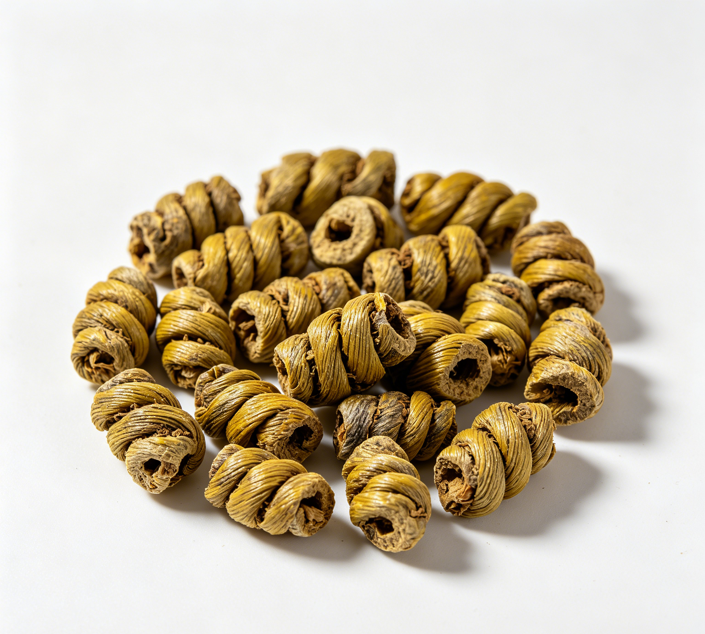

📋 基本信息
中文名铁皮石斛
拉丁名Dendrobium officinale Kimura
英文名Dendrobii Officinalis Caulis
产地科：兰科（Orchidaceae）；属：石斛属（Dendrobium）。主产于浙江（雁荡山、乐清）、云南、安徽（霍山周边）、贵州、广西、福建、四川等地，现多为设施及林下仿生栽培。
性状铁皮枫斗：本品呈螺旋形或弹簧状，通常为2～6个旋纹，茎拉直后长3.5～8cm，直径0.2～0.4cm。表面黄绿色或略带金黄色，有细纵皱纹，节明显，节上有时可见残留的灰白色叶鞘；一端可见茎基部留下的短须根。质坚实，易折断，断面平坦，灰白色至灰绿色，略角质状。气微，味淡，嚼之有黏性。铁皮石斛（段）：本品呈圆柱形的段，长短不等。（《中国药典》2020年版一部）
用法用量6～12g。（《中国药典》2020年版一部；鲜品食疗常用15～30g，榨汁或嚼服）
贮藏置通风干燥处，防潮。（《中国药典》2020年版一部）
☯ 传统属性
四气寒
五味甘
归经胃、肾经
功能主治益胃生津，滋阴清热。用于热病津伤，口干烦渴，胃阴不足，食少干呕，病后虚热不退，阴虚火旺，骨蒸劳热，目暗不明，筋骨痿软。（《中国药典》2020年版一部）
禁忌症本品性微寒而滋腻，脾胃虚寒、大便溏薄者慎用；湿热内盛、感冒初起发热者不宜过早服用滋补；传统认为不宜与发散药同用过量。食疗应辨证施用，阴盛阳虚者不宜。【来源：《中华本草》及公开食疗文献整理】
毒性常规剂量安全性较好；过量服用可因滋腻碍胃引起腹胀、食欲不振、便溏；药性微寒，虚寒体质者久服可致胃脘冷痛、腹泻；偶见过敏反应；与温热发散药或某些药物同用应遵医嘱。
适宜体质阴虚质、湿热质
适宜证型阴虚证、肺阴虚证、胃阴虚证、热证
🔬 现代研究
主要成分主要活性成分为铁皮石斛多糖（甘露聚糖，以D-甘露糖为主，含葡萄糖、半乳糖等，药典要求多糖≥25.0%、甘露糖13.0%～38.0%）；另含菲类及联苄类成分（如鼓槌菲chrysotoxene、毛兰素erianin等）、生物碱、黄酮类、核苷类（尿苷、鸟苷、腺苷）、多种氨基酸及锌、硒、铁等微量元素。
药理作用已报道的药理活性包括：增强机体免疫功能（石斛多糖增强T细胞及巨噬细胞活性）、抗氧化、清除自由基、提高SOD活性、抗疲劳；降血糖、保护胰岛功能；保护胃黏膜、促进消化；抗肿瘤辅助活性（毛兰素等菲类成分体外抑制肿瘤细胞）；对半乳糖性白内障晶状体中醛糖还原酶等活性异常有抑制或纠正作用；另有抗衰老、保肝等报道。
食疗功效食疗上取其养阴生津、益胃清热之功，常用于熬夜伤阴、咽干口渴、胃脘隐痛、病后体虚的调养；铁皮石斛老鸭汤滋阴润燥，鲜条榨汁清胃热生津液，枫斗麦冬茶养阴利咽，为江浙沪及岭南地区常见滋补药膳。
食养禁忌
🏭 产品形态与潜在功能
推荐形态
饮片粉末提取物
潜在功能